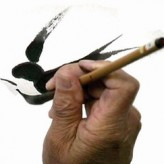
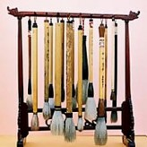
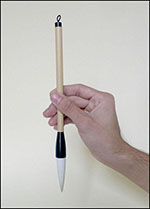
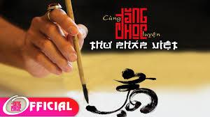

Trang chủ
Trang chủ-
Những căn bản đầu tiên khi luyện tập thư pháp
 - Bút lông những điều cần biết khi mua và sử dụng 
- Cách cầm bút viết thư pháp 
- Video luyện thư pháp Việt với Đăng Học - Phần 1 
- Video luyện thư pháp Việt với Đăng Học - Phần 2
Khi sáng tác một tác phẩm thư pháp chúng ta cần có nhưng kỹ thuật và kỹ xảo. Kỹ xảo là những xảo thuật giúp ta tạo được những đường nét trái thường, hoặc đó là những bí quyết riêng… Kỹ thuật vận bút (Bút pháp) là những kỹ thuật căn bản nhất, phổ biến nhất và quan trọng nhất cho những ai mới làm quen hay tập luyện viết thư...
Trung Hoa gọi là “Mao Bút”, là một tuyệt phẩm của nhân loại (theo truyền thuyết bút lông được người Trung Quốc phát minh khoảng 221 năm trước Công Nguyên). Nguyên liệu thường được dùng để làm bút ban đầu chủ yếu dùng lông cầm thú như lông dê, lông hưu, lông nai, lông heo, lông cọp, báo…Trải qua hơn 2000 ngàn năm, cây bút lông được người Trung...
Cầm bút sao cho bút vuông góc với mặt giấy, khi viết các ngón tay và cổ tay phải thoải mái không gồng cứng. Lưng thẳng, vai giữ nằm ngang và thả lỏng. Nên tập cho mình một thói quen để giấy song song với cạnh bàn và vai, không nên để tờ giấy xéo và xoay người sang để viết. Với tác phẩm có kích thước vừa phải khi chuyển bút chỉ di chuyển các ngón tay, cổ tay, khủy tay chứ không di chuyển vai và toàn thân. Tuỳ vào loại giấy, độ đặc lỏng của mực và thể chữ mà bạn chọn cho mình tốc độ viết phù hợp
 Trang chủ
Trang chủ You Tube
You Tube Facebook
Facebook Twitter
Twitter